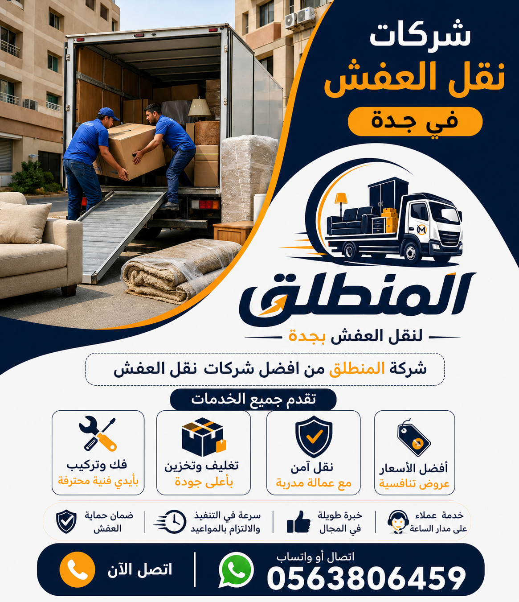

أفضل شركة نقل عفش بجدة – نقدم خدمة نقل الأثاث باستخدام أحدث المعدات ومواد التغليف الاحترافية لحماية عفشك من الخدوش والكسر. نوفر نقل العفش مع الفك والتركيب وخدمات النقل الآمن. شركة المنطلق لنقل العفش بجدة هي خيارك الأمثل لنقل عفش منزلك أو مكتبك.
عند البحث عن شركات نقل العفش بجدة، تجد العديد من الخيارات، لكن شركة المنطلق لنقل العفش بجدة هي الخيار الأمثل الذي يجمع بين الخبرة الطويلة والجودة العالية والأسعار المنافسة. تعتبر جدة من أكبر المدن السعودية وأسرعها نمواً، حيث تشهد حركة انتقال مستمرة للسكان بين أحيائها المتعددة، من شمال جدة (الموز، الأندلس، الربيع، الحمراء) إلى جنوبها (غليل، البوادي، اليمن، القوز)، ومن شرقها (مشرفة، السلامة، النعيم، بني مالك) إلى غربها (الشاطئ، المرجان، البغدادية الغربية، الكورنيش). ومع هذا التوسع العمراني، تزداد الحاجة إلى شركة نقل عفش بجدة موثوقة تقدم خدمات احترافية تشمل الفك والتركيب والتغليف والنقل الآمن. في هذا الدليل الشامل، سنتعرف على كل ما تقدمه شركة المنطلق من خدمات، وكيف يمكنك نقل عفشك دون أي قلق أو تعب. تعرف على من نحن لتكتشف تاريخنا الطويل في مجال نقل العفش بجدة. نحن ندرك أن الأثاث المنزلي يمثل استثماراً كبيراً وذاكرة عائلية، ولذلك نتعامل مع كل قطعة كأنها ملكنا الشخصي. فريقنا من العمالة المدربة والمتخصصة يقوم بتنفيذ عملية النقل وفق خطة مدروسة تبدأ من المعاينة المجانية وتقدير حجم العفش، مروراً بمراحل الفك والتغليف والتحميل، وانتهاءً بالنقل والتفريغ وإعادة التركيب في الموقع الجديد. نستخدم أحدث سيارات ودينات نقل العفش المجهزة بأنظمة تثبيت حديثة، وأفضل مواد التغليف المستوردة من أوروبا، لضمان وصول عفشك سليماً 100%. في الأقسام التالية، سنشرح بالتفصيل كل خدمة من خدماتنا، مع جداول أسعار تقريبية ومقارنات لمساعدتك على اتخاذ القرار الصحيح. لا تتردد في الاتصال بنا لأي استفسار أو للحصول على عرض سعر فوري. شركة المنطلق تنتظر مكالمتك على رقم 0563806459.

تتميز شركة المنطلق لنقل العفش بجدة بعدة مميزات تجعلها الخيار الأول لعملائها. أولاً، الخبرة الطويلة: لدينا أكثر من 15 عاماً من الخبرة في مجال نقل الأثاث بجدة، وقمنا بنقل آلاف المنازل والفلل والمكاتب بنجاح. ثانياً، العمالة المدربة: جميع عمالنا وفنينا يخضعون لبرامج تدريبية دورية على أحدث تقنيات الفك والتركيب والتغليف. ثالثاً، أسعار مناسبة وتنافسية: نقدم أسعار نقل العفش بجدة تناسب جميع الميزانيات، مع عروض وخصومات مستمرة. رابعاً، السرعة في التنفيذ: فريقنا يصل في الوقت المحدد وينهي المهمة في أسرع وقت ممكن دون إخلال بالجودة. خامساً، التغطية الشاملة: نخدم جميع أحياء جدة بالكامل، بما في ذلك المناطق النائية والجديدة. سادساً، المعدات الحديثة: نمتلك أسطولاً من السيارات والدينات المجهزة بأحدث أنظمة التثبيت والتعليق الهوائي. سابعاً، مواد تغليف عالية الجودة: نستخدم أفضل مواد التغليف المستوردة لحماية الأثاث من الخدوش والكسر. ثامناً، الفك والتركيب الاحترافي: لدينا نجارين متخصصين في فك وتركيب الأثاث بجدة لجميع أنواع الأثاث. تاسعاً، خدمة العملاء المتوفرة 24 ساعة: يمكنك الاتصال بنا في أي وقت وسنرد على استفسارك فوراً. عاشراً، الضمان: نقدم ضماناً على سلامة الأثاث المنقول، حيث نتحمل مسؤولية أي ضرر يحدث بفعل سوء الخدمة. من نحن يوضح بالتفصيل سياسة الجودة والضمان. إذا كنت تبحث عن أفضل شركة نقل أثاث بجدة، فإن شركة المنطلق هي خيارك الأمثل. اتصل على 0563806459 الآن واحصل على عرض سعر مجاني.
فك وتركيب الأثاث بجدة من الخدمات الأساسية التي نقدمها في شركة المنطلق. كثير من قطع الأثاث لا يمكن نقلها وهي مجمعة بسبب كبر حجمها، مثل غرف النوم الكلاسيكية، والمطابخ المتكاملة، والمجالس الكبيرة، والمكاتب التنفيذية. لذلك، نوفر فريقاً من النجارين المتخصصين الذين يقومون بتفكيك الأثاث بأدوات احترافية، مع الحفاظ على جميع البراغي والمسامير والملحقات في أكياس مرقمة لتسهيل إعادة التركيب. بعد الانتهاء من النقل، يقوم نفس الفريق بإعادة تركيب الأثاث في الموقع الجديد بدقة متناهية، مع التأكد من ثبات القطع وعمل الأدراج والمفصلات بسلاسة. تشمل خدمة الفك والتركيب: غرف النوم بجميع أنواعها (حديثة، كلاسيكية، أطفال)، المطابخ الخشبية والألمنيوم، المجالس العربية والغربية، غرف الطعام، المكتبات، والمكاتب الإدارية. نستخدم مفكات كهربائية ويدوية مناسبة لكل نوع من أنواع الأثاث، مع الحرص على عدم خدش أو كسر أي قطعة. مدونة فك وتركيب الأثاث بجدة تقدم نصائح إضافية حول كيفية الحفاظ على الأثاث أثناء الفك والتركيب. أسعار فك وتركيب الأثاث تبدأ من 100 ريال لغرفة نوم صغيرة، وتصل إلى 500 ريال لفيلا كاملة. يمكنك الاستفادة من العروض المجمعة (فك + تغليف + نقل + تركيب) بخصم يصل إلى 20%. نحن نضمن تركيب الأثاث بشكل صحيح وآمن، بحيث يكون جاهزاً للاستخدام فور الانتهاء. إذا كنت بحاجة إلى شركة فك وتركيب عفش بجدة، فثق في شركة المنطلق لتحصل على خدمة احترافية بأسعار عادلة. اتصل على 0563806459 لحجز نجار متخصص.
تغليف العفش هو خط الدفاع الأول لحماية الأثاث أثناء النقل. في شركة المنطلق، نقدم خدمة تغليف العفش بجدة باستخدام أفضل المواد المستوردة. نستخدم البلاستيك الفقاعي (بابل راب) بسمك 3 مم و5 مم، والكرتون المقوى المزدوج، والزوايا البلاستيكية لحماية زوايا الأثاث، والأغطية القماشية القابلة للغسل، والنايلون الشفاف السميك. يتم تغليف كل قطعة أثاث على حدة حسب حجمها ونوعها: غرف النوم تغلف بألواح الكرتون والبلاستيك الفقاعي، الكنب والمجالس تغلف بأغطية قماشية مع طبقة داخلية من البلاستيك، الأجهزة الكهربائية توضع في صناديق مخصصة مع حشوات فوم، والزجاج والمرايا يتم تغليفها بطبقتين من الفوم والكرتون ووضعها في صناديق خشبية إذا لزم الأمر. مدونة تغليف العفش بجدة تشرح بالتفصيل أفضل طرق التغليف. عملية التغليف لا تحمي الأثاث من الخدوش والكسور فقط، بل تحميه أيضاً من الغبار والرطوبة والحشرات أثناء النقل أو التخزين. ننصح جميع عملائنا بطلب خدمة التغليف كجزء من الحزمة المتكاملة لنقل العفش، لأن تكلفة التغليف أقل بكثير من تكلفة إصلاح أو استبدال الأثاث التالف. نقل العفش مع التغليف هو الحل الأمثل للحصول على أفضل حماية. أسعار التغليف تبدأ من 15 ريالاً للقطعة الصغيرة وتصل إلى 300 ريال لجميع أثاث شقة 3 غرف. احصل على عرض سعر مفصل عند الاتصال بنا.
نقل غرف النوم والمجالس هو قلب خدمة نقل العفش التي نقدمها في شركة المنطلق. غرف النوم تحتوي على قطع كبيرة وثقيلة مثل الأسرة والدواليب الكبيرة والتساريح والمرايا الكبيرة، بينما المجالس تحتوي على كنب ومقاعد وطاولات قد تكون فاخرة وحساسة. في شركة المنطلق، لدينا فريق متخصص يقوم بتفكيك غرف النوم بالكامل، مع ترقيم الألواح والبراغي، ثم نقلها بعد التغليف إلى الموقع الجديد وإعادة تركيبها بدقة. أما بالنسبة للكنب والمجالس، فإننا ننقلها إما مجمعة إذا كان الحجم مناسباً، أو نقوم بفك الأرجل إن أمكن. نستخدم أحزمة خاصة لحمل الأثاث الثقيل، وعربات نقل بمطاط لحماية الأرضيات والسلالم. جميع غرف النوم والمجالس يتم تغليفها بطبقتين من البلاستيك الفقاعي والأغطية القماشية لحمايتها من الخدوش والاتساخ. نحن نتعامل مع جميع أنواع الأثاث: غرف نوم مودرن، كلاسيك، أطفال، كنب زاوية، كنب كلاسيك، مجالس عربية ومغربية. دينات نقل العفش بجدة المستخدمة لدينا مزودة بأرضيات مبطنة لحماية الأثاث من الاهتزازات. أسعار نقل غرفة نوم كاملة تبدأ من 150 ريالاً، ونقل مجلس كامل يبدأ من 100 ريال. ننصح بحجز الخدمة قبل أسبوع على الأقل خاصة في المواسم المزدحمة. اتصل بنا لمعرفة التفاصيل.
نقل المطابخ والأجهزة الكهربائية يتطلب خبرة خاصة، وفي شركة المنطلق نمتلك هذه الخبرة. المطابخ عادة ما تحتوي على خزائن علوية وسفلية، وأدراج، وأجهزة مدمجة مثل الثلاجات والغسالات والأفران. نقوم أولاً بفك جميع خزائن المطبخ بواسطة نجارين متخصصين، مع تغليف كل جزء على حدة. يتم تغليف الرخام بشكل خاص باستخدام فوم سميك وزوايا خشبية لحمايته من الكسر. أما بالنسبة للأجهزة الكهربائية، فإننا نتبع إجراءات دقيقة: تفريغ الثلاجة من الطعام وتركها لتذويب الثلج لمدة 24 ساعة، ثم تغليفها بالكامل بطبقتين من البلاستيك الفقاعي. الغسالات يتم تثبيت الحوض الداخلي لمنع تحركه أثناء النقل. الشاشات المسطحة توضع في صناديق مخصصة مع فوم عازل. المكيفات يتم تفريغ الغاز إذا لزم الأمر (يحتاج فني متخصص) ثم نقلها بحذر. شركة نقل أثاث بجدة مثل المنطلق توفر لك راحة البال بأن أجهزتك ستصل سليمة. أسعار نقل المطبخ الكامل تبدأ من 300 ريال (شامل الفك والتغليف والتركيب). أسعار نقل الأجهزة الكهربائية تبدأ من 30 ريالاً للجهاز الصغير (ميكروويف) وتصل إلى 100 ريال للثلاجة الكبيرة. نوصي بطلب خدمة نقل المطابخ مع باقي العفش للحصول على خصم يصل إلى 15%. الصفحة الرئيسية تعرض جميع العروض الحالية. اتصل بنا لحجز خدمة نقل المطبخ والأجهزة.
دينات نقل العفش بجدة هي العمود الفقري لخدمة نقل الأثاث. في شركة المنطلق، نمتلك أسطولاً من السيارات والدينات مجهزة بأحدث التقنيات لضمان نقل آمن وسريع. أسطولنا يشمل: دينات صغيرة (1.5 طن) مناسبة لنقل العفش الخفيف في الشقق الصغيرة، دينات متوسطة (3 طن) لنقل أثاث الشقق المتوسطة، دينات كبيرة (5 طن) لنقل أثاث الفلل الكبيرة، بالإضافة إلى سيارات حديثة لنقل الأثاث الفاخر. جميع سياراتنا مزودة بأنظمة تثبيت داخلية متطورة تشمل أحزمة ربط قابلة للتعديل وقضبان تثبيت (E-Track) تمنع حركة الأثاث أثناء السير. كما أن السيارات مزودة بأرضيات مبطنة بطبقات من المطاط لحماية الأثاث من الاهتزازات والخدوش. بعض السيارات مزودة برافعات هيدروليكية لتسهيل تحميل وتفريغ القطع الثقيلة. نحن نستخدم أيضاً أنظمة تعليق هوائي في بعض السيارات لتقليل الاهتزازات بشكل كبير، وهو أمر ضروري للأجهزة الإلكترونية الحساسة. جميع سياراتنا مجهزة بأجهزة تتبع GPS، مما يمكن العميل من متابعة موقع الشاحنة في الوقت الفعلي. نقل العفش بجدة مع أسطولنا يعني السرعة والأمان والموثوقية. نحرص على صيانة سياراتنا بشكل دوري لضمان جاهزيتها الدائمة. يمكنك اختيار حجم السيارة المناسب لكمية العفش لديك، ونحن نقدم النصيحة المجانية حول الحجم المناسب. أسعار إيجار دينة نقل عفش تبدأ من 200 ريال للمسافات القصيرة داخل جدة. اتصل بنا لمعرفة التفاصيل وحجز سيارتك.
نقدم في شركة المنطلق أسعاراً تنافسية لخدمات نقل العفش بجدة تناسب جميع الميزانيات. الأسعار التالية هي أسعار تقريبية وقد تختلف حسب حجم الأثاث والمسافة والخدمات المطلوبة. للحصول على عرض سعر دقيق، ننصح بالاتصال بنا لإرسال مندوب للمعاينة المجانية. نقدم خصومات تصل إلى 20% للحجوزات المجمعة (فك + تغليف + نقل + تركيب) وللعملاء المتكررين. جميع الأسعار شاملة الضرائب ولا توجد رسوم خفية. تفاصيل أسعار نقل العفش بجدة تجدها في جدول المقارنة أدناه.
| نوع الخدمة | السعر التقريبي (ريال سعودي) | الوقت المتوقع | ملاحظات |
|---|---|---|---|
| نقل شقة غرفة نوم (بدون فك) | 100 - 200 | 1-2 ساعات | يشمل النقل فقط |
| نقل شقة غرفة نوم مع فك وتركيب | 200 - 350 | 2-3 ساعات | يشمل فك وتغليف وتركيب |
| نقل شقة 3 غرف (نقل فقط) | 300 - 500 | 2-3 ساعات | دينة متوسطة |
| نقل شقة 3 غرف شامل (فك+تغليف+تركيب) | 500 - 800 | 3-5 ساعات | خدمة شاملة |
| نقل فيلا صغيرة (4-5 غرف) شامل | 800 - 1200 | 5-6 ساعات | فريق من 4 عمال |
| نقل فيلا كبيرة (6+ غرف) شامل | 1200 - 1800 | 6-8 ساعات | دينة كبيرة وفريق كبير |
| نقل قصر (خدمة شاملة VIP) | 2000 - 3500 | 8-12 ساعة | تغليف فاخر وأوناش |
| نقل مكتب صغير (1-2 غرفة) | 250 - 400 | 2-3 ساعات | يشمل الفك والتركيب |
| نقل شركة متوسطة (5-10 غرف) | 800 - 1500 | 4-6 ساعات | خارج ساعات العمل |
| فك وتركيب غرفة نوم فقط | 100 - 150 | 1 ساعة | نجار متخصص |
| فك وتركيب مطبخ كامل | 200 - 400 | 2-3 ساعات | مع تغليف الرخام |
| تغليف أثاث شقة 3 غرف | 200 - 350 | 2-3 ساعات | مواد عالية الجودة |
| تغليف فيلا كاملة | 500 - 800 | 3-5 ساعات | جميع المواد |
| تغليف كنب ومجالس | 150 - 300 | 1-2 ساعات | أغطية قماشية |
| تغليف أجهزة كهربائية | 50 - 150 | حسب العدد | كراتين مخصصة |
| تخزين عفش (شهرياً) | 40 - 100 | للمتر المكعب | مستودعات مكيفة |
| رفع أثاث بالأوناش | 200 - 500 | حسب الحالة | للمباني المرتفعة |
ملاحظة: الأسعار تقريبية وقد تتغير حسب كمية العفش والمسافة والموقع. احصل على عرض سعر مجاني ودقيق عبر الاتصال بنا على 0563806459.
في بعض الأحيان، يحتاج العملاء إلى تخزين عفشهم لفترة مؤقتة بسبب تأخر استلام المنزل الجديد، أو السفر الطويل، أو تجديد المنزل. شركة المنطلق تقدم خدمة تخزين العفش في جدة بالتعاون مع مستودعات مجهزة بأعلى المواصفات. مستودعاتنا مزودة بأنظمة تكييف وتهوية للحفاظ على الأثاث من الرطوبة والحرارة، وأنظمة مراقبة كاميرات 24 ساعة، وحراسة أمنية على مدار الساعة. يتم تغليف العفش قبل التخزين بطبقات إضافية من البلاستيك الفقاعي والنايلون السميك لحمايته من الغبار والحشرات. يوضع الأثاث على رفوف معدنية مرتفعة عن الأرض لمنع الرطوبة، ويتم تنظيم وترقيم الممرات لتسهيل استرجاع أي قطعة في أي وقت. أسعار التخزين تبدأ من 40 ريالاً للمتر المكعب شهرياً، مع عروض خاصة للتخزين طويل الأجل (أكثر من 6 أشهر). يمكنك تخزين جميع أنواع الأثاث: غرف نوم، مجالس، أجهزة كهربائية، تحف، مستندات، بضائع تجارية. نقدم خدمة نقل العفش إلى المستودع ثم استرجاعه عند الطلب، مع تكرار عملية التغليف والتفريغ حسب الحاجة. نقل العفش مع التغليف والتخزين في حزمة واحدة يوفر عليك الوقت والجهد. نحن نوصي بهذه الخدمة للعملاء الذين يمرون بفترة انتقالية صعبة، حيث توفر لهم مساحة مؤقتة وراحة البال. اتصل بنا لمعرفة المساحة المتاحة في المستودعات والاستفسار عن الأسعار.
نقل المكاتب والشركات يتطلب تخطيطاً دقيقاً وتنفيذاً سريعاً خارج ساعات العمل الرسمية لتجنب تعطيل الأعمال. في شركة المنطلق، نقدم خدمة نقل المكاتب والشركات بجدة وفق أعلى المعايير. نبدأ بزيارة ميدانية للمكتب أو الشركة لحصر الأثاث والمعدات والأجهزة، ووضع خطة نقل مفصلة تتضمن الجدول الزمني وعدد العمال والسيارات المطلوبة. نقوم بنقل جميع أنواع الأثاث المكتبي: مكاتب تنفيذية وعادية، كراسي دوارة، خزائن ملفات، طاولات اجتماعات، أرفف تخزين، وغرف الأرشيف. كما ننقل الأجهزة الإلكترونية مثل أجهزة الكمبيوتر والطابعات والخوادم والسويتشات، مع تغليف خاص وحماية من الكهرباء الساكنة. نعمل في أغلب الأحيان خارج ساعات العمل (الليل، عطلات نهاية الأسبوع) لضمان عدم التأثير على سير العمل. بعد الوصول إلى المقر الجديد، نقوم بإعادة تركيب الأثاث وترتيبه حسب توجيهات العميل. صفحة خدماتنا تشرح بالتفصيل خيارات نقل المكاتب. أسعار نقل المكاتب تبدأ من 250 ريالاً للمكتب الصغير (1-2 غرفة)، وتصل إلى 1500 ريال للشركات المتوسطة (5-10 غرف). نقدم خصومات خاصة للعقود طويلة الأجل والشركات التي تطلب نقل فروع متعددة. اتصل بنا اليوم لتحصل على عرض سعر مخصص لشركتك.
مع انتشار العديد من شركات نقل العفش في جدة، قد يكون من الصعب اختيار الشركة الموثوقة. في شركة المنطلق، نقدم لك مجموعة من النصائح لمساعدتك في اختيار أفضل شركة. أولاً، ابحث عن شركة لها سجل حافل من النجاحات وتقييمات إيجابية من العملاء السابقين. يمكنك قراءة مدونتنا للاطلاع على شهادات العملاء. ثانياً، تأكد من أن الشركة تقدم خدمة المعاينة المجانية قبل تحديد السعر. أي شركة تحدد سعراً دون رؤية العفش قد تكون غير موثوقة. ثالثاً، اسأل عن تفاصيل السعر: هل يشمل الفك والتركيب والتغليف؟ أم أن هناك رسوماً إضافية؟ رابعاً، تأكد من أن الشركة تستخدم مواد تغليف عالية الجودة وليس البلاستيك العادي فقط. خامساً، اسأل عن نوع السيارات المستخدمة وحجمها وتجهيزاتها. سادساً، تأكد من أن العمالة مدربة وذات خبرة. سابعاً، اقرأ العقد جيداً قبل التوقيع، وتأكد من وجود بند يتعلق بالضمان والتعويض في حالة حدوث ضرر. ثامناً، لا تتعامل مع الشركات التي تطلب دفعة مقدمة كبيرة قبل البدء في العمل. تاسعاً، قارن بين أسعار عدة شركات، لكن لا تجعل السعر هو العامل الوحيد، فالجودة أهم. عاشراً، احجز الخدمة قبل وقت كافٍ، خاصة في مواسم الانتقال (الصيف والإجازات). من نحن يوضح سياسة الشفافية والجودة التي نتبعها. باتباع هذه النصائح، ستتمكن من اختيار شركة موثوقة مثل المنطلق، وتجنب الشركات الوهمية أو غير الاحترافية. اتصل بنا لأي استفسار ونحن سعداء بتقديم النصح لك.
شركة المنطلق لنقل العفش تخدم جميع أحياء جدة بالكامل، من شمالها إلى جنوبها ومن شرقها إلى غربها. نحن نغطي شمال جدة مثل: حي الموز، حي الأندلس، حي الربيع، حي الحمراء، حي النزهة، حي المروة، حي الفيحاء، حي الصفا، حي الشرفية، حي الزهراء. كما نغطي جنوب جدة مثل: حي غليل، حي البوادي، حي اليمن، حي القوز، حي بريمان، حي مشرفة القديمة، حي الرويس، حي السبيل. ونغطي شرق جدة مثل: حي مشرفة، حي السلامة، حي النعيم، حي بني مالك، حي الروضة، حي البساتين، حي الخالدية، حي المحجر. ونغطي غرب جدة مثل: حي الشاطئ، حي المرجان، حي البغدادية الغربية، حي الكورنيش، حي الأمواج، حي اللؤلؤة، حي النسيم، حي الأمير فواز. كما نخدم المناطق الجديدة والمجمعات السكنية مثل: مدينة الملك عبدالله الرياضية، ومركز جدة للمنتديات والمعارض، وأبراج لمار، ومنطقة جدة التاريخية (البلد). وبفضل هذا الانتشار الواسع، أصبحنا الخيار الأول للعملاء في جميع أنحاء جدة. يمكننا الوصول إلى أي حي في أقل من ساعة من وقت الاتصال. لا تتردد في الاتصال بنا مهما كان حيك، ففريقنا مستعد للوصول إليك بسرعة وكفاءة. صفحة اتصل بنا توضح جميع وسائل التواصل. الرئيسية تعرض كل التفاصيل عن مناطق التغطية. اتصل بنا الآن لتحصل على خدمة نقل عفش سريعة وآمنة في أي حي بجدة.
تختلف الأسعار حسب حجم الأثاث والمسافة والخدمات المطلوبة. تبدأ الأسعار من 100 ريال للشقة الصغيرة (نقل فقط) وتصل إلى 1800 ريال للفيلا الكبيرة (خدمة شاملة). اتصل بنا للحصول على عرض سعر دقيق.
شركة المنطلق هي الأفضل بفضل خبرتها الطويلة وأسعارها المناسبة وخدماتها المتميزة والعمالة المدربة.
نعم، نوفر خدمة فك وتركيب الأثاث بواسطة نجارين متخصصين بأسعار إضافية رمزية تبدأ من 100 ريال.
نعم، نخدم جميع أحياء جدة شمالاً، جنوباً، شرقاً، وغرباً، بما في ذلك الأحياء الجديدة والنائية.
تستغرق من 3 إلى 5 ساعات حسب كمية الأثاث وتعقيد الفك والتركيب، مع فريق من 3-4 عمال.
نعم، نوفر تغليفاً احترافياً للأجهزة باستخدام صناديق مخصصة وفوم عازل لحماية الثلاجات والغسالات والشاشات.
نستخدم طبقتين من الفوم والكرتون للزجاج والمرايا، ونضعها في صناديق خشبية عند الحاجة، ونضمن وصولها سليمة.
نعم، نوفر تخزين العفش في مستودعات مكيفة وآمنة بأسعار تبدأ من 40 ريالاً للمتر المكعب شهرياً.
جميع عمالنا مدربون على أحدث تقنيات رفع ونقل الأثاث الثقيل، ويستخدمون أحزمة وعربات متخصصة.
نعم، نقدم خدمة النقل فقط إذا كان العميل قد قام بفك الأثاث بنفسه.
نعم، نقدم ضماناً على سلامة الأثاث المنقول ضد الخدوش والكسر الناتج عن سوء الخدمة (مع بعض الاستثناءات).
نعم، نعمل 24 ساعة طوال أيام الأسبوع بما في ذلك الجمعة والأعياد.
يبدأ من 150 ريالاً للنقل فقط، ومن 250 ريالاً للنقل مع الفك والتركيب.
نعم، لدينا دينات كبيرة (5 طن) لنقل أثاث الفلل والقصور، مزودة بأنظمة تثبيت متطورة.
يمكنك الاتصال بنا على 0563806459 أو عبر الواتساب، وسنرسل مندوباً للمعاينة المجانية وتحديد السعر خلال ساعة.
أفضل أسعار، أحدث المعدات، عمالة مدربة، فك وتركيب، تغليف احترافي، نقل آمن، وتخزين. شركة المنطلق هي خيارك الأول لنقل العفش بجدة.
نخدم جميع أحياء جدة – شمال جدة، جنوب جدة، شرق جدة، غرب جدة – خدمة 24 ساعة